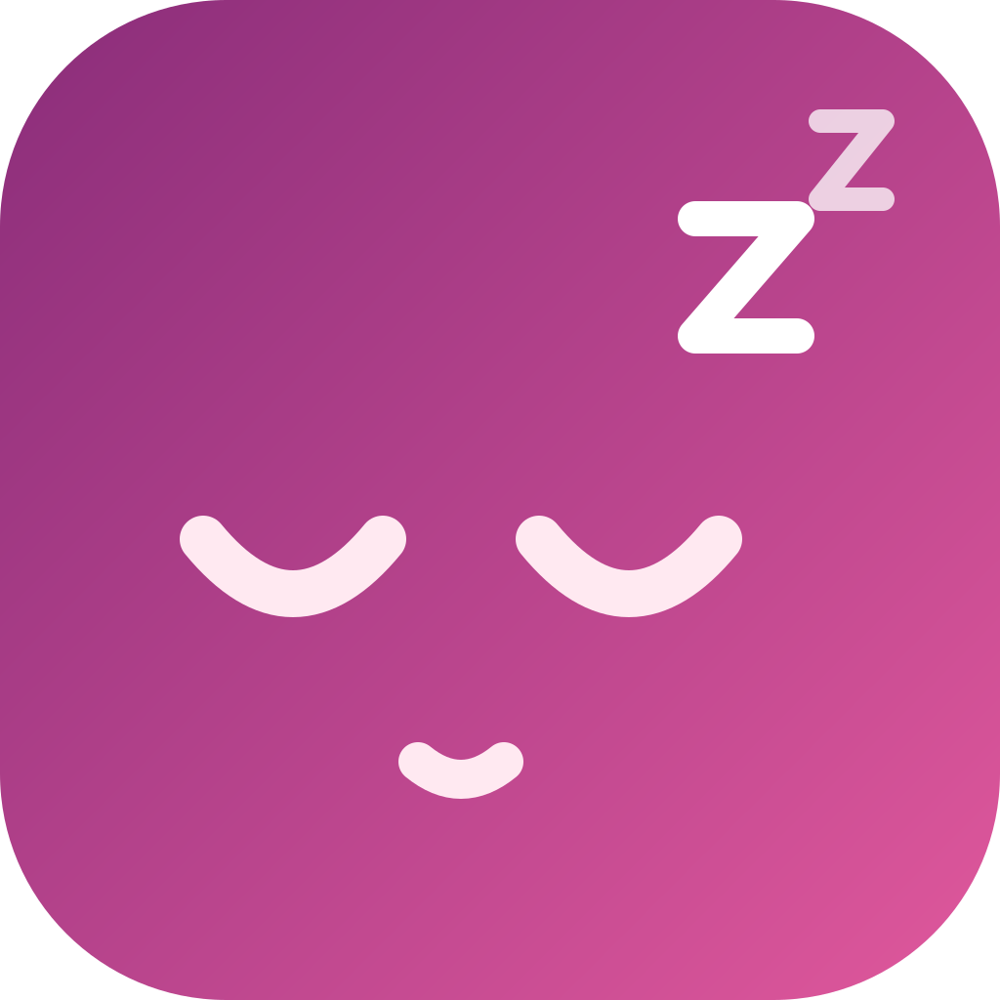

Rootless + RootHide
NightNight
Hibernate your iPhone before the battery dies. NightNight isolates its radios while asleep and restores the previous system state when you wake it.

Compatibility
| Build | Architecture | Compatibility |
|---|---|---|
| RootHide | iphoneos-arm64e |
Tested on iOS 18.4.1 (Dopamine 3, RootHide) |
| Rootless | iphoneos-arm64 |
Expected to work on rootless jailbreaks |
Tested on iOS 18.4.1. This is a jailbreak tweak, not an App Store app. The package declares no iOS version restriction.
What it does
- Hibernates automatically at a configurable battery threshold, or on demand with Hibernate Now.
- Enables Airplane Mode and explicitly turns off Wi-Fi and Bluetooth while hibernating. Calls and messages cannot arrive.
- Silences notification banners, sounds, and vibration locally; notifications remain in Notification Center.
- Blocks tap-to-wake, pencil-to-wake, and lift-to-wake.
- Wakes when the volume up button is pressed 3 times.
- Pauses media, enables Low Power Mode, locks the screen, and fades the backlight.
- Restores Wi-Fi, Bluetooth, Airplane Mode, Low Power Mode, ringer volume, lock, and proximity state on wake.
Wake and charging
- Pressing the volume up button 3 times always wakes the device.
- Wake When Charger Connects wakes on a new charger connection.
- If the charger is already connected when hibernation starts, NightNight waits for the next unplug/reconnect. It does not wake immediately.
- While charger wake is on, the Wake Threshold is disabled and its slider is ignored.
- Hibernate While Charging controls whether automatic hibernation may start while connected. Manual hibernation is always available.
Settings
| Setting | Default |
|---|---|
| Enable NightNight | On |
| Auto Hibernate | On |
| Sleep Threshold | 5% |
| Wake Threshold | 6% |
| Hibernate While Charging | Off |
| Wake When Charger Connects | Off |
Settings apply immediately. Respring is not needed after changing them.
Privacy and scope
NightNight does not use analytics or contact remote services. Notification suppression is local to the device.
Radios, ringer volume, Low Power Mode, lock state, and proximity monitoring are restored on wake. Media that NightNight pauses is left paused.
Install
- Download the matching deb from the latest GitHub release:
- RootHide:
NightNight_1.0.1_roothide_iphoneos-arm64e.deb - Rootless:
NightNight_1.0.1_rootless_iphoneos-arm64.deb
- RootHide:
- Install with Sileo, Zebra, or Filza.
- Respring after installation so SpringBoard loads the tweak and preference bundle.
- Open Settings → NightNight to configure thresholds.
Verification
SHA-256 checksums are published in SHA256SUMS.txt with the GitHub release. Verify the deb before installing it.
Support
Open an issue on GitHub. Include your iOS version, jailbreak, device model, NightNight version, and the steps that led to the problem.
License
MIT